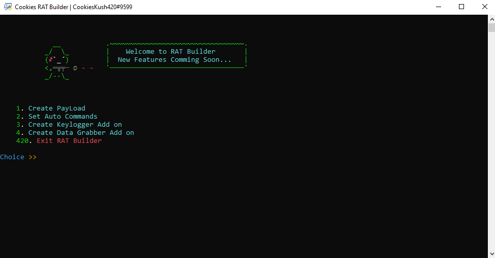
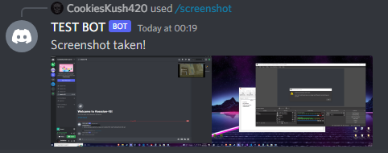
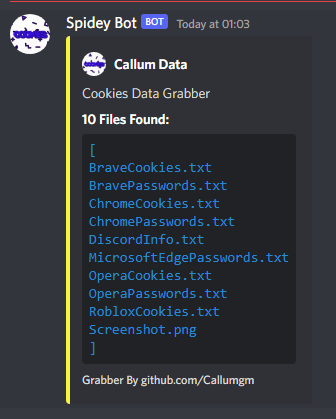
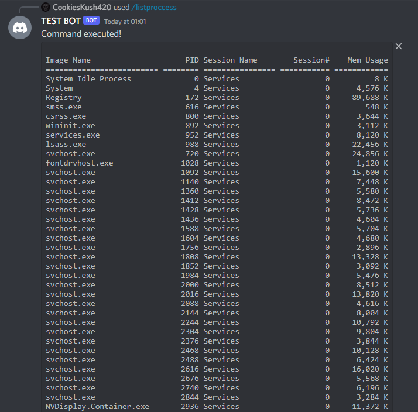

Cookie's Remote Administration Tool
   Cookie's RAT is a FUD (Fully undetected) tool to administrate others computers. It is ran over discord so you are able to access the victims computer from any discord client. it has many features including record audio, webcam, take screenshots, keylog, geolocate, grab tokens, and many more.
Features
- Anti-Debug
- Record Mic Audio for 10s
- Webcam Image/SteamImage
- All Monitors Screenshot Image/SteamImage
- Replace Old Payload With Updated Version
- Clean Easy To Read Keylogger
- Geolocate
- Bluescreen PC If RAT Is Stopped (critproc)
- Grab Discord Tokens
- Kill All Inactive Sessions
- Check If RAT Has Administration Perms
- Block Mouse & Keyboard Input
- Bluescreen PC
- Grab Clipboard History
- Delete Files
- Disable Anti-Virus
- Disable Firewall
- Disable Task Manager
- Turn All Monitors Off
- Download Files
- Force Administration Perm
- Get Idle Time
- Grab PC Info
- List Running Proccesses
- Log Off User
- Shutdown PC
- Restart PC
- Set Volume To 100%
- Set Volume To 0%
- Send Custom Error Message
- Scan IP For Open Ports
- Set Persistence For The RAT
- Remove All Traces Of The RAT (self destruct)
- Execute Shell Commands
- Start File
- Add RAT To Startup
- Force Stop Running Tasks
- Show Current Open Window
- Write Message
- Open Website